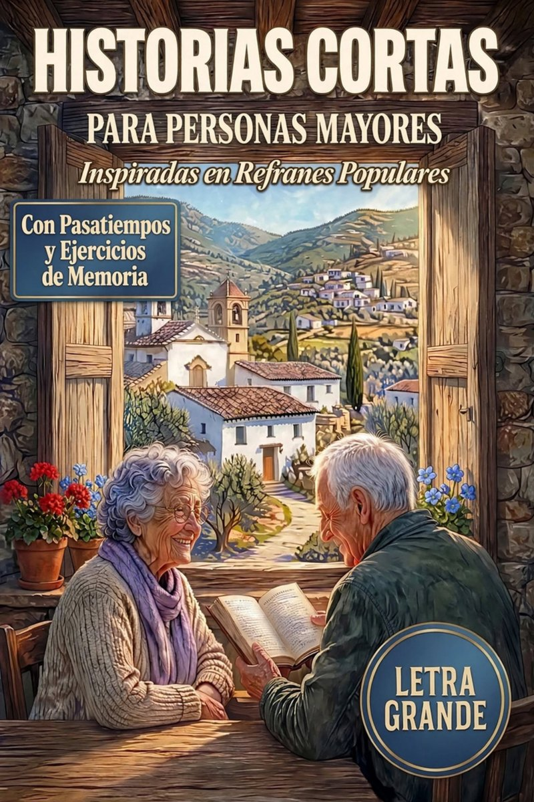

Un viaje entrañable a los recuerdos de toda la vida. Historias cortas inspiradas en los refranes populares que marcaron a generaciones, pensadas para despertar sonrisas, avivar recuerdos y emocionar. Cada relato va acompañado de ejercicios sencillos de memoria, con letra grande para leer con comodidad.
Póngase cómodo, suba el volumen y deje que la historia le lleve a otros tiempos.
Así son las actividades que acompañan a cada historia del libro.
1. ¿Cómo se llamaba la niña protagonista de esta historia?
2. ¿Qué le preparó su madre para la fiesta, y con qué tela?
3. ¿Recuerdas cómo te vestías tú para la fiesta mayor de tu pueblo? ¿Quién te preparaba la ropa?
Si no recuerda alguna respuesta, vuelva a escuchar la historia.
Escriba la palabra que falta en cada uno de estos dichos tan conocidos:
© 2026 Maria Gordo · Volver a los pasatiempos